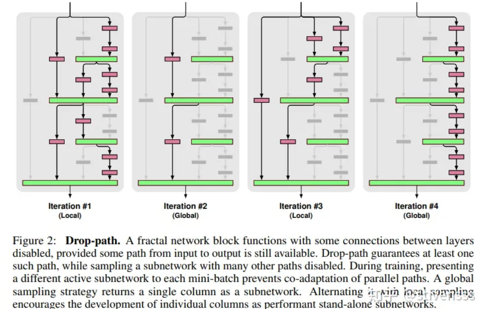
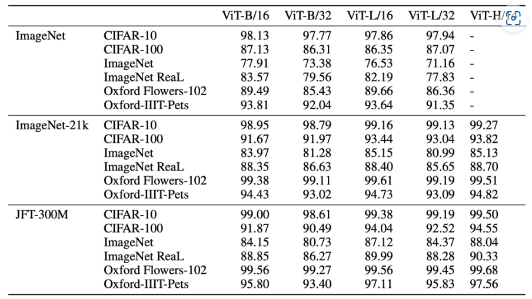

ViT：An Image is Worth 16x16 Words: Transformers for Image Recognition at Scale
相关信息
论文地址：An Image is Worth 16x16 Words: Transformers for Image Recognition at Scale
代码（Pytorch版）:https://github.com/huggingface/pytorch-image-models/
Labml.ai注释实现：https://nn.labml.ai/zh/transformers/vit/index.html
https://github.com/yangyunfeng-cyber/Useful-DL-Projects-for-Exercise/blob/main/VIT/vit_model.py

文章摘要
ViT是2020年Google团队提出的将Transformer应用在图像分类的模型，虽然不是第一篇将transformer应用在视觉任务的论文，但是因为其模型“简单”且效果好，可扩展性强（scalable，模型越大效果越好），基于Transformer的模型在视觉领域的开篇之作。ViT模型是基于Transformer Encoder模型的。
相关技术：
Big Transfer (BiT): General Visual Representation Learning
Self-training with Noisy Student improves ImageNet classification
ViT 架构
该算法在中等规模（例如ImageNet）以及大规模（例如ImageNet-21K、JFT-300M）数据集上进行了实验验证，发现：
-
Tranformer相较于CNN结构，缺少一定的平移不变性Translation Equivariance和局部感知性Locality(归纳偏置Inductive Bias)，因此在数据量不充分时，很难达到同等的效果。具体表现为使用中等规模的ImageNet训练的Tranformer会比ResNet在精度上低几个百分点。 -
当有大量的训练样本时，结果则会发生改变。使用大规模数据集进行预训练后，再使用迁移学习的方式应用到其他数据集上，可以达到或超越当前的SOTA水平。
因为Tranformer本身并不能输入二维的图像数据，因此先将图像划分为patches，即输入图像\(\mathbf{x} \in \mathbb{R}^{H \times W \times C}\)被划分为大小为\(P \times P\)的patch，形成长度为\(N=\frac{HW}{P^2}\)个图像块的序列，每个patch表示为\(\mathbf{x}_p^i \in \mathbb{R}^{1 \times (P^2 \times C)} ,i \in \{1,...,N \}\)。
为了输入进Tranformer，将每个patch拉平为一维向量，再通过一个线性层进行映射为\(\mathbf{E} = \mathbb{R}^{(P^2 \times C) \times D}\)，映射为一个维度为D的一维向量。
在所有patch之前，生成一个可学习的[Class] Token(一个随机的一维向量)，将其添加到图像块投影序列的前面，该class token在训练过程中会不断更新，用于表示整个图像的信息。
同时，为了反应每个图像块的位置信息，给每个图像块嵌入添加一个可学习的位置编码。因此共有N+1个序列，所以可学习位置编码表示为\(\mathbf{E}_{pos} = \mathbb{R}^{(N+1) \times D}\)。
ViT 模型结构
ViT框架简洁实现（lucidrains）
1 2 3 4 5 6 7 8 9 10 11 12 13 14 15 16 17 18 19 20 21 22 23 24 25 26 27 28 29 30 31 32 33 34 35 36 37 38 39 40 41 42 43 44 45 46 47 48 49 50 51 52 53 54 55 56 57 58 59 60 61 62 63 64 65 66 67 68 69 70 71 72 73 74 75 76 77 78 79 80 81 82 83 84 85 86 87 88 89 90 91 92 93 94 95 96 97 98 99 100 101 102 103 104 105 106 107 108 109 110 111 112 113 114 115 116 117 118 119 120 121 122 123 124 125 126 127 128 129 130 131 132 133 134 135 136 137 138 | |
DropPath替代Dropout
可以采用DropPath（Stochastic Depth）来代替传统的Dropout结构。DropPath是一种针对分支网络而提出的网络正则化方法，其作用是在训练过程中随机丢弃子图层（randomly drop a subset of layers），而在预测时正常使用完整的 Graph.。其中作者提出了两种DropPath方法：
-
Local Drop：对join层的输入分支按一定的概率进行丢弃，但是至少保证要有一个输入
-
Global Drop：整个网络来只选择一条路径，且限制为某个单独列，该路径具有独立的强预测。

可以使用from timm.layers import DropPath来调用
实验
ViT论文中的预训练和微调实验主要采用了传统范式：首先在大规模数据集上进行监督预训练，然后在下游任务上进行监督微调。相比之下，它并没有像 BERT 一样设计出创新的自监督预训练方式。然而，后续肯定可以使用自监督预训练技术来进一步改进ViT模型。
